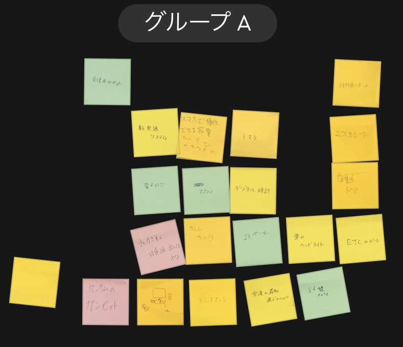

<h1>プログラミングで動いているもの  グループの意見</h1>

<h1>電車の場合</h1>
<div>まずfor文でドアの前に人がいるか、そうでないかのチェックを<br>
    繰り返す。<br>
    if文で、それを判断して場合に応じて、print（）で動作をする。<br>
    if文でelseを用いると、<br>
    if文で条件を決めて、それに会ったら、if文で動作、<br>
    条件に会わなかったらelse文で処理することになる。<br>
    ifで人がいたら、ドアを開ける、そうでないなら、<br>
    else文でドアを閉じるという風になる。<br>
    <h1>自分のアイデア</h1>
    


</div>